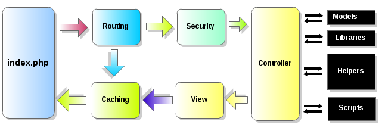

Application Flow Chart
The graphic below illustrates how data flows throughout the system:

- The index.php serves as the front controller, initializing the base resources needed to run LF.
- The Router takes care of the HTTP request to determine what should be done with it.
- If a valid cache file exists, it is sent directly to the browser, bypassing the normal system execution.
- Before the application controller is loaded, the HTTP request and any user submitted data is filtered for security.
- The controller loads the model, core libraries, helpers, and any other resources needed to process the specific request.
- The finalized template and view is rendered and sent to the web browser.